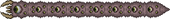

Chefes
Os chefes são inimigos agressivos e resilientes destinados a oferecer um desafio substancial aos jogadores. Derrotar um chefe geralmente é fundamental para avançar o jogo de uma forma ou de outra, como conceder ao jogador um novo material para uma picareta de um nível mais alto. Cada um tem sua maneira particular de ser convocado. Por exemplo, a maioria dos chefes tem itens de invocação associados que podem ser usados para gerá-los manualmente sob certas condições, enquanto há outros que aparecerão depois que o jogador interagir de uma certa maneira com o ambiente. Os chefes de eventos só aparecerão durante seus respectivos eventos e sairão quando o evento terminar. Mini-chefes aparecem apenas durante eventos especiais, expressando a mesma quantidade de dificuldade que muitos chefes normais. A saúde dos chefes tem um alcance enorme: no Modo Clássico varia de 1.000 a 145.000. A maioria dos chefes e mini-chefes podem passar por blocos de todos os tipos, com exceção do King Slime, Rainha Slime, Lepus, Turkor, o Ingrato corpo, e o Holandês Voador.
Chefes pré-Hardmode
Estes são os primeiros chefes que o jogador pode encontrar. Normalmente, derrotar um desses chefes dará ao jogador itens e materiais necessários para progredir no jogo, eventualmente levando ao Hardmode. Embora existam 8 chefes pré-Hardmode, apenas 7 podem ser gerados no mesmo mundo, já que o Devorador de Mundos é exclusivo para mundos contendo Corrupção, e o Cérebro de Cthulhu é exclusivo para mundos contendo Carmesim (supondo que o jogador não coloque um mal alternativo no mesmo mundo que o outro, por exemplo, através de sementes de outro mundo ou sementes compradas do Dryad no modo Hard, e não usa um semente secreta).
Rei Slime

King Slime é um slime azul gigante com 2.000 / 2.800 / 3.570 saúde. Ele é convocado com uma Coroa Slime ou depois de matar 150 (75 se ele já foi morto) slimes durante um Chuva de limo. Ele também raramente pode aparecer nos sextos laterais externos do mundo completamente sozinho. Como acontece com todos os inimigos que podem desovar naturalmente, King Slime tem uma chance melhor de desovar enquanto está perto de uma Vela de Água colocada ou enquanto está sob os efeitos de uma Poção de Batalha. No Versão Desktop Desktop, Versão do console Console e Versão móvel Mobile, King Slime pode se teletransportar para o jogador se ele ficar preso ou se o jogador ficar fora de seu alcance por muito tempo. King Slime não fornece acesso a itens de avanço do jogo após a derrota, mas o Modo Especialista externo cairá 1, uma peça do conjunto Ninja e um dos vários itens relacionados ao lodo. No Modo Especialista, o Rei Slime pode invocar Slimes Cravados, que agem de forma semelhante ao Spiked Jungle Slime e ao Spiked Ice Slime.
Olho de Cthulhu
O Olho de Cthulhu é um enorme globo ocular com 2.800 / 3.640 / 4.641 de saúde. Ele tem 1/3 (33,33%) de chance de desovar no início de cada noite, desde que pelo menos um jogador no mundo tenha 200 ou mais HP e mais de 10 defesa, enquanto 3 ou mais NPCs estejam vivendo em casas no mundo. Continuará a fazê-lo até ser derrotado pela primeira vez. Ele também pode ser invocado usando um olho suspeito à noite. Se não for derrotado pelo jogador até o final da noite, ele viajará para cima e desovará. Este é geralmente o primeiro chefe que um jogador deve enfrentar. Ele viaja através de blocos, e gera Servos de Cthulhu. No Modo Especialista, o Olho de Cthulhu fará um rápido traço em cadeia em sua segunda fase, usando o ataque com mais frequência pela menor saúde que ele tem. O ataque de corrente também escalará em agressividade da mesma forma. Isso pode levá-lo a correr quase continuamente em alta velocidade com saúde muito baixa.
Devorador de Mundos
The Eater of Worlds é um worm colossal com 10.050 / 15.120 / 19.224 de saúde no total na Versão Desktop versão Desktop, versão Console e versão Mobile, Versão do console e 7.500 saúde na Versão de console de geração antiga versão de console de geração antiga e Versão móvel Nintendo. Versão Nintendo 3DS versão. Ele desova uma vez depois que cada três Shadow Orb é quebrado ou depois que Worm Food é usado. O Devorador de Mundos só pode ser convocado na Corrupção, e pode ser convocado a qualquer hora do dia. Se conseguir escapar da Corrupção, fugirá e desaparecerá. O Devorador de Mundos é um grande inimigo do tipo verme que viaja através de telhas, e é composto por várias seções que podem atacar separadamente quando cortadas. Para derrotá-lo, cada seção deve ser reduzida a menos de duas partes do corpo para ser morta (a menor seção possível é uma cabeça e uma cauda sem pedaços de corpo). Devido ao quão útil é a engrenagem da Corrupção, este provavelmente será o segundo chefe enfrentado em mundos que têm Corrupção, em vez daqueles que têm Crimson. The Eater of Worlds é a única fonte de Shadow Scales no jogo, e ele solta grandes quantidades de Demonite Ore. O Minério Demonita pode ser vendido por quase 10 por pilha de 99, tornando este tecnicamente o melhor chefe pré-Hardmode para agricultura no jogo. No Modo Especialista, o chefe é capaz de disparar projéteis verde-escuros contra o jogador chamado Vile Spit, semelhantes aos disparados de Corruptors, outro inimigo exclusivo da Corrupção.
Cérebro de Cthulhu
Para estratégias elaboradas sobre como derrotar o Cérebro de Cthulhu, incluindo recomendações de armas e arenas, consulte Guia:Cérebro de estratégias de Cthulhu. O cérebro de Cthulhu é um cérebro grande e voador com apenas 1.250 / 2.125 / 2.709 de saúde, dando-lhe a menor quantidade de saúde de qualquer chefe. Ele gera uma vez para cada três Crimson Heart que é quebrado ou imediatamente após um Bloody Spine é usado. Só pode ser convocado no Rubro-Negro, mas a qualquer hora do dia. O cérebro de Cthulhu tem duas formas. Na primeira forma, o cérebro não pode ser prejudicado, e Creepers flutuarão em torno dele. Depois que todos eles forem mortos, o Cérebro de Cthulhu entrará em sua segunda forma, onde se teletransportará mais freneticamente e se moverá muito mais rápido. A segunda forma do Cérebro de Cthulhu ataca batendo no jogador, como a segunda forma de Olho de Cthulhu. Ao contrário da maioria dos outros chefes, o Cérebro de Cthulhu não está imune a rebatidas. O Cérebro de Cthulhu é a única fonte de Amostras de Tecido no jogo (além dos Creepers gerados durante a luta), e solta uma grande quantidade de Minério Crimtane, que são os equivalentes Carmesim aos itens Corrupção Escala de Sombra e Minério Demoníaco, respectivamente. No Modo Especialista, na segunda fase do Cérebro de Cthulhu, ele começará a criar ilusões de si mesmo para cobrar do jogador. Quanto mais baixo o Cérebro do HP de Cthulhu fica, menos óbvias as ilusões se tornam, a ponto de se parecerem exatamente com o verdadeiro Cérebro de Cthulhu.
Abelha Rainha
A abelha rainha é uma abelha enorme com 3.400 / 4.760 / 6.069 saúde. Ela é convocada destruindo uma Larva, envolta dentro das paredes de Colmeias de Abelhas localizadas na Selva Subterrânea, pelo uso de uma Abeeminação em qualquer lugar do bioma Selva. Ela é a única fonte de cera de abelha no jogo. Queen Bee alterna entre carregar no jogador, pairar acima deles enquanto desova abelhas, e mover-se para a esquerda e direita enquanto atira ferrões. No Modo Especialista, a taxa em que ela cobra o jogador fica mais rápido quanto mais dano ela leva. Derrotar a Abelha Rainha permitirá que o Feiticeiro desova; fora isso, ela não avança o jogo em um sentido importante, embora derrotá-la forneça algum saque decente que pode ajudar ainda mais o jogador a se preparar para batalhas posteriores contra chefes, como contra a Muralha da Carne. Uma dessas armas é a Beenade, que é extremamente eficaz ao combater a Muralha da Carne.
Skeletron
Skeletron é uma grande cabeça esquelética com 4.400 / 8.800 / 11.220 saúde e duas mãos. Ele é inicialmente convocado falando com o NPC do Velho Homem na entrada do Calabouço e ativando sua maldição à noite, mas pode ser invocado novamente matando o Clothier enquanto equipado com o Boneco Vodu Clothier à noite. Skeletron alternará entre atacar o jogador com as mãos e executar um ataque giratório. Suas mãos podem ser atacadas e derrotadas para tornar a batalha mais fácil, embora isso não seja necessário. Se não tiver sido derrotado antes da noite acabar, Skeletron ganhará uma enorme quantidade de defesa e girará nos jogadores em alta velocidade, causando grandes quantidades de dano que geralmente matam o jogador em um golpe, até que todos os jogadores estejam mortos ou ele seja derrotado. Derrotar Skeletron impedirá que os Guardiões do Calabouço desovam, permitindo acesso gratuito ao Calabouço. No Modo Expert, a cabeça de Skeletron é mais resistente a danos até que suas mãos sejam destruídas. Uma vez que pelo menos uma mão é destruída, ele começará a atirar caveiras no jogador. Também é muito mais rápido. Suas mãos infligem o debuff Lento, e sua cabeça inflige sangramento. Se o jogador for pego por seu ataque de giro de cabeça, Skeletron pode "atordoá-los", uma situação letal que só pode ser escapada por alta mobilidade, por exemplo, com um gancho.
Deerclops
Deerclops é um cervo grande, ereto, de um olho com 7.000 / 11.900 / 15.172 saúde. Ele é invocado usando um Cervo Coisa a qualquer momento enquanto estiver no bioma Neve, ou pode desovar naturalmente à meia-noite durante uma Blizzard se pelo menos um jogador no mundo tiver pelo menos 9 defesas ou 200 de saúde. Se Deerclops já foi derrotado no mundo, há apenas 1/4 (25%) de chance de ele desovar naturalmente. Deerclops tem ataques de curta distância e ataques de projéteis para atacar o jogador em todos os intervalos. Ele se tornará imune a todos os danos se o jogador estiver muito longe. Deerclops podem subir através de blocos sólidos se o jogador estiver acima dele e longe o suficiente, apesar de normalmente ser incapaz de passar através de blocos sólidos. Se todos os jogadores estiverem mortos ou não houver nenhum por perto, Deerclops vagará por aí em vez de desovar imediatamente. Ele será desova se nenhum jogador estiver por perto depois que um dia de jogo (24 minutos do mundo real) tiver se passado desde a desova de Deerclops. Sair e reentrar no mundo também fará com que ele desova.
Parede de Carne
A Muralha da Carne é uma parede imponente que abrange toda a altura da tela. Tem 8.000 / 11.200 / 14.280 saúde. Ele é convocado jogando um boneco vodu guia em uma piscina de lava enquanto o guia está vivo. É o chefe final do pré-Hardmode, e derrotá-lo habilitará irreversivelmente o Hardmode no mundo. Ele pode soltar vários itens poderosos, um deles sendo a queda garantida Pwnhammer que pode ser usado para quebrar Demon e Crimson Altars, a fim de gerar vários minérios Hardmode de avanço do jogo. Ao invocar a Muralha da Carne, o jogador será afligido com o debuff Horrorizado, que impede a fuga da batalha – qualquer tentativa de fazê-lo resultará em dano severo via A Língua ou morte instantânea se o jogador tentar se teletransportar, e o debuff não será removido até que o jogador ou a Muralha de Carne seja morto. A Muralha da Carne varrerá o mapa, movendo-se mais rápido à medida que seu HP diminui. Ele deve ser morto antes de chegar ao final do mapa, caso contrário, ele desovará e qualquer jogador vivo no Submundo morrerá. Além disso, os olhos da Muralha da Carne disparam lasers, com a taxa de fogo aumentando à medida que leva dano. Sua boca arrota sanguessugas que irão perseguir o jogador, e tem pequenas bocas presas a ele chamadas The Hungry, que também se movem em direção e danificam o jogador. No Modo Especialista, a Muralha de Carne aumentará muito sua velocidade de movimento à medida que sua saúde diminui, eventualmente superando até mesmo os jogadores montando o Bunny Mount ou montarias para cavalos em velocidade de movimento. O Faminto irá rapidamente ressurgir, muitas vezes bloqueando a parede de ataques, e pode causar danos significativos. Quanto mais rápido a Muralha de Carne se mover e quanto mais rápido The Hungry respawn, mais o jogador terá que se concentrar em causar dano e se mover por um terreno decente.
Chefes hard-mode
Rainha Slime
Para estratégias elaboradas para derrotar Queen Slime, incluindo recomendações de armas e arenas, consulte Guia:Estratégias de Queen Slime. Queen Slime é um slime gigante com 18.000 / 28.800 / 36.720 saúde. Ela está disponível para lutar no início do Hardmode, e é convocada a partir de Cristais de Gelatina que podem ser encontrados na Relíquia Subterrânea. Ela é uma luta de chefe opcional e é uma pequena lacuna para desafiar antes de enfrentar os chefes mecânicos, garantindo atualizações de equipamentos e outros itens. Há uma semelhança muito forte com o King Slime, pré-Hardmode. Enquanto ela leva dano, ela gera Crystal Slimes, Bouncy Slimes e Heavenly Slimes para ajudá-la. Enquanto sua primeira forma é direta com padrões de ataque semelhantes aos do Rei Slime, a segunda fase representa muito mais uma ameaça quando o chefe começa a voar no ar, disparando projéteis de cima.
Os Gêmeos

Troféu Retinazer.png Para estratégias elaboradas para derrotar os Gêmeos, incluindo recomendações de armas e arenas, consulte Guia:As estratégias dos Gêmeos. Os Gêmeos são um par de Olhos cibernéticos de Cthulhu. Eles existem como duas entidades individuais, conhecidas como Retinazer e Spazmatism, com o primeiro tendo 20.000 / 30.000 / 38.250 saúde e o segundo tendo 23.000 / 34.500 / 43.987 saúde. Os Gêmeos são convocados usando um Olho Mecânico à noite. Os dois olhos têm estilos de luta diferentes. Retinazer se concentra em atirar no jogador com Lasers de Olhos como a Parede dos Olhos de Carne. Quando atingir 40% de HP, ele se transformará em sua segunda forma, substituindo sua pupila por um canhão laser. Durante esta forma, ele irá disparar Death Lasers extremamente rápido, às vezes tendo a mesma taxa de fogo que um Megashark. O outro olho, Spazmatism, se concentra em bater no jogador e disparar chamas amaldiçoadas que infligem o debuff Inferno Amaldiçoado. Quando atingir 40% de HP, ele se transformará em sua segunda forma, lembrando uma versão mecânica da segunda forma do Olho de Cthulhu. Ele causará muito mais dano, e as chamas que ele dispara são mais consistentes como o Lança-Chamas em vez das Chamas Amaldiçoadas. Ao contrário do Olho de Cthulhu, os Gêmeos ganharão defesa em suas segundas formas. Depois de serem derrotados, eles deixarão cair Barras Sagradas e Almas da Visão, que podem ser usadas para criar várias armaduras e armas. O último gêmeo destruído vai largar todo o saque. Se não forem derrotados antes do dia, os Gêmeos fugirão da batalha e dessurgirão. No Modo Expert, o Retinazer disparará lasers mais rápido, e o Spazmatism carregará mais rápido em sua segunda forma.
O Destruidor
Para estratégias elaboradas para derrotar o Destruidor, incluindo recomendações de armas e arenas, consulte Guia:As estratégias do Destruidor. O Destruidor é um verme mecanizado colossal com 80.000 / 120.000 / 153.000 saúde. Embora seja semelhante ao seu homólogo pré-Hardmode, o Eater of Worlds, ele tem algumas diferenças principais: ele não se dividirá em segmentos menores, disparará lasers de seu corpo se houver espaço disponível e implantará sondas para atacar quando um segmento for destruído. O Destruidor é convocado criando e usando um Verme Mecânico em qualquer lugar, mas só pode ser gerado à noite. O Destruidor atirará Lasers da Morte, aumentando a velocidade de ataque à medida que perde saúde. Armas que causam dano a vários segmentos como Flails, Daedalus Stormbow e Demon Scythe são recomendadas, porque atingirão várias seções do Destruidor de uma só vez. No Modo Especialista, a cabeça do Destruidor pode causar danos de até 280 / 420, incapacitando o jogador se ele for atingido de frente.
Skeletron Prime
Para estratégias elaboradas para derrotar o Skeletron Prime, incluindo recomendações de armas e arenas, consulte Guia:Estratégias Skeletron Prime. Skeletron Prime é uma variação mecânica armada de Skeletron, com a cabeça sozinha tendo 28.000 / 42.000 / 53.550 saúde. Em vez de duas mãos, tem quatro membros – um vício, uma arma laser, uma serra e um canhão. Com a cabeça e todos os membros combinados, o Skeletron Prime tem 59.000 / 88.500 / 112.836 HP. No entanto, como Skeletron, apenas a cabeça tem que ser derrotada. Skeletron Prime pode ser invocado criando e usando um Caveira Mecânica em qualquer lugar da noite. Ele é mais móvel do que seu antecessor e voa regularmente para fora da tela, tornando a segmentação mais difícil. Quando sua cabeça gira, sua defesa dobra de 24 para 48, ao contrário de Skeletron, cuja defesa é reduzida para 0 ao girar. Skeletron Prime abandonará Hallowed Bars e Souls of Fright ao ser derrotado, que são usados para criar muitos tipos de armaduras e ferramentas. Como Skeletron, se Skeletron Prime não for morto antes do fim da noite, ele girará e terá como alvo o jogador, geralmente matando o jogador em um golpe, e desovará depois. No Modo Especialista, o Skeletron Prime se move significativamente mais rápido durante seu ataque giratório, de forma semelhante ao Skeletron.
Plantera
Para estratégias elaboradas para derrotar Plantera, incluindo recomendações de armas e arenas, consulte Guia:Estratégias Plantera. Plantera é uma enorme flor com 30.000 / 42.000 / 53.549 saúde. Ela é acordada destruindo uma Lâmpada de Plantera, que é encontrada na Selva Subterrânea depois de derrotar todos os três chefes mecânicos. Se o jogador sair da Selva Subterrânea, Plantera fica "furiosa", ganhando um aumento significativo em suas estatísticas. Plantera tem duas fases. Em sua primeira fase, ela se apega a blocos sólidos usando ganchos semelhantes a videiras e queima Sementes (e eventualmente Sementes Venenosas). Em sua segunda forma, Plantera aumentou a velocidade e se movimenta de forma mais agressiva para o jogador. Ela também lançará vários lacaios de "Plantera's Tentacle" que estão ligados ao seu corpo principal. Em Modo Especialista, as sementes podem atravessar paredes e ter um ligeiro homing, e tentáculos extras de Platera são anexados a cada gancho (3 em cada) em sua segunda fase, adicionando 9 tentáculos no total. Uma vez que Plantera é derrotado, o Calabouço automaticamente gerará inimigos mais fortes do Modo Duro, como o Paladino, e mais variedades de loot podem ser descartadas. Além disso, a disseminação de Carmesim, Corrupção e Sebo são reduzidas à metade.
Golem

Para estratégias elaboradas para derrotar Golem, incluindo recomendações de armas e arenas, consulte Guia:Estratégias de Golem. Golem é um grande chefe com um total combinado de 60.000 / 90.000 / 114.749 saúde. Ele é invocado usando uma Célula de Poder Lihzahrd no Altar Lihzahrd no Templo da Selva. Para acessar o Templo da Selva, Plantera deve ser derrotado para obter a Chave do Templo. Golem tem duas fases. Durante a primeira fase, seus dois punhos e sua cabeça podem ser atacados. Como Skeletron, destruir os punhos não é necessário, mas pode ser útil. Uma vez que a saúde da cabeça está esgotada, ela começa a voar acima do corpo enquanto atira bolas de fogo e feixes oculares, deixando o corpo aberto para ataques. O corpo vai pular e socar loucamente nessa fase. Derrotar o corpo derrotará Golem.
Duque Fishron

Para estratégias elaboradas para derrotar Duke Fishron, incluindo recomendações de armas e arenas, consulte Guia:Estratégias de Duke Fishron. Duke Fishron é um híbrido mutante tubarão-porco-dragão com 60.000 / 78.000 / 99.450 de saúde. Ele é convocado quando um verme trufado é usado como isca para a pesca no oceano. Embora ele possa, portanto, ser invocado assim que o jogador entrar no Hardmode, derrotá-lo geralmente exigirá equipamentos obtidos mais tarde. Em sua primeira fase, Duke Fishron tentará abalroar o jogador cinco vezes antes de disparar bolhas explosivas ou invocar Sharknados. Em sua segunda etapa, Duke Fishron ganha olhos brilhantes e um impulso para ataque e defesa. Embora seus ataques de abalroamento permaneçam os mesmos, em vez de disparar bolhas diretamente no jogador, ele voa rapidamente em círculos, enviando bolhas para todos os lugares. Em vez de invocar Sharknados nesta fase, Duke Fishron convoca Cthulhunados maiores. Estes permanecem no local por mais tempo do que Sharknados. No Modo Especialista, quando Duke Fishron cai abaixo de 15% (11700 / 14917) de saúde, ele entra em sua terceira fase. Nesta fase, a tela fica escura, Duke Fishron se torna invisível e apenas seus olhos brilhantes são visíveis. Ele se teletransporta e tenta abalroar o jogador com alta velocidade algumas vezes, antes que ele se teleporte novamente.
Imperatriz de Luz
Para estratégias elaboradas para derrotar a Imperatriz da Luz, incluindo recomendações de armas e arenas, consulte Guia:Estratégias da Imperatriz da Luz. A Imperatriz da Luz é uma chefe com tema de Relíquia com 70.000 / 98.000 / 124.950 de saúde. Ela pode ser convocada para matar um Prismatic Lacewing que desova em The Hallow uma vez que Plantera é derrotado. Ela geralmente é combatida à noite, e fica "furiosa" com danos muito maiores durante o dia. Derrotar a Imperatriz da Luz não é necessário para a progressão do jogo, mas ela solta um saque poderoso.
Cultista lunático
Para estratégias elaboradas para derrotar o Cultista Lunático, incluindo recomendações de armas e arenas, consulte Guia:Estratégias do Culto Lunático. O Cultista Lunático é um chefe comparativamente pequeno com 32.000 / 48.000 / 61.200 saúde. Ele é convocado matando os quatro cultistas, que residem na entrada do Calabouço depois que Golem e Skeletron são derrotados. Quando o Cultista Lunático for derrotado, os Eventos Lunares começarão. Os ataques do Cultista Lunático se tornam mais poderosos à medida que ele perde saúde. O Lunatic Cultist voa aleatoriamente, pedalando entre disparar bolas de fogo, criando uma bola que dispara raios contra o jogador, atirando em um floco de neve gigante que dispara fragmentos de gelo ao seu redor, atirando chamas de sombra e atirando cinco projéteis destrutíveis duas vezes seguidas. O Cultista Lunático também criará cópias falsas de si mesmo, que invocará um Dragão Fantasma quando danificado. Se um Dragão Phantasm ainda estiver vivo e o jogador danificar essas cópias, ele invocará uma Visão Antiga. Esperar muito tempo para atacar o verdadeiro Cultista Lunático também fará com que o Dragão Phantasm ou Visão Antiga seja invocado. No Modo Especialista, o Cultista Lunático irá gerar Ancient Dooms junto com seus outros ataques.
Senhor da Lua
O Senhor da Lua é o chefe final de Terraria, e deixa cair a maioria dos itens do final do jogo. Ele também solta Luminite, um minério usado para criar muitos conjuntos de armaduras e ferramentas de final de jogo. Ele é convocado derrotando todos os quatro Pilares Celestiais dos Eventos Lunares, ou usando um Sigil Celestial. Ele tem uma saúde combinada de 145.000 / 217.500 / 277.311, a maior saúde de qualquer chefe no jogo. O Senhor da Lua tem duas mãos e uma cabeça que deve ser morta atacando os olhos sobre elas, e quando morto liberará os invencíveis Olhos Verdadeiros de Cthulhu. Quando os três olhos são destruídos, o núcleo do Senhor da Lua se abre em seu peito, que deve então ser destruído para derrotar o chefe. As mãos do Senhor da Lua disparam dois projéteis de uma só vez que atingem o jogador, e invocam versões fantasmas do Olho Verdadeiro de Cthulhu e os jogam no jogador. O olho superior do Senhor da Lua ocasionalmente disparará um Raio Mortal Fantasmagórico que varrerá toda a tela. Sendo muito mortal para os jogadores, pode ser evitado por movimentos rápidos. Quando os Verdadeiros Olhos de Cthulhu são liberados, os lugares onde costumavam estar infligirão pequenos danos de contato. Os Verdadeiros Olhos de Cthulhu dispararão versões menos danosas de muitos dos mesmos ataques que fizeram quando ainda estavam fechados dentro do Senhor da Lua. Mundos com o Senhor da Lua derrotado receberão uma borda dourada no menu de seleção mundial.